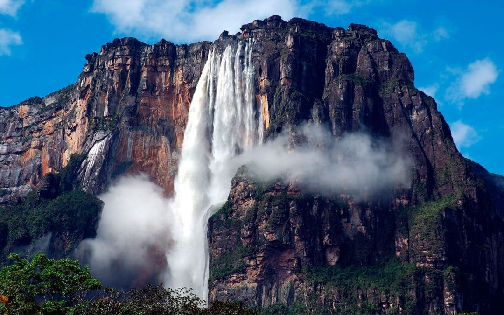

Sitios Naturales
se refieren a las áreas de la superficie terrestre que no han sido significativamente alteradas por la actividad humana y que presentan un alto valor ecológico , paisajístico y recreativo. Estos sitios pueden incluir parques nacionales, áreas protegidas, reservas naturales, monumentos naturales, ríos, bosques, montañas, entre otros. Los sitios naturales son considerados parte del patrimonio natural de un país y son valorados tanto por su importancia ecológica como por su atractivo turístico.
se caracterizan por su variedad de flora y fauna autóctona y endémica, así como por su espectacular paisaje natural. En muchos casos, estos sitios ofrecen a los visitantes la oportunidad de experimentar actividades al aire libre como senderismo, camping, paseos en bote, observación de aves, entre otros. Además, en algunos sitios se pueden encontrar formas geológicas naturales únicas, como ríos subterráneos, cuevas, formaciones rocosas, entre otros. Debido a su importancia ecológica, muchos sitios naturales están protegidos por leyes y regulaciones gubernamentales con el fin de preservar su integridad y garantizar el disfrute sostenible del turismo. En resumen, los sitios naturales son lugares mágicos que ofrecen una ventana hacia la belleza natural del mundo, así como una oportunidad única para experimentar y comprender los ecosistemas naturales de nuestro planeta.
Tipos de paisaje natural
Teniendo en cuenta su ubicación y su relieve, los paisajes naturales se pueden clasificar en:
Paisajes costeros: Se encuentran en el borde entre la tierra y el mar. Pueden ser abruptos, como los acantilados, o llanos, como las playas; y presentar salientes terrestres, como las penínsulas y cabos, o entrantes marítimos, como las bahías y los golfos.
Paisajes interiores: Se ubican en el interior de los continentes. Incluye, entre otras formaciones, las montañas, los valles, las mesetas, las llanuras y las depresiones.
Paisajes marinos: Son las zonas del mar próximas a la costa y las regiones submarinas.
